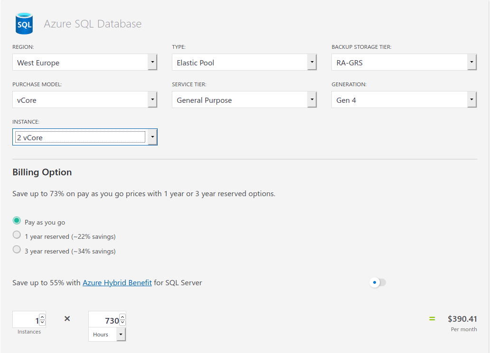
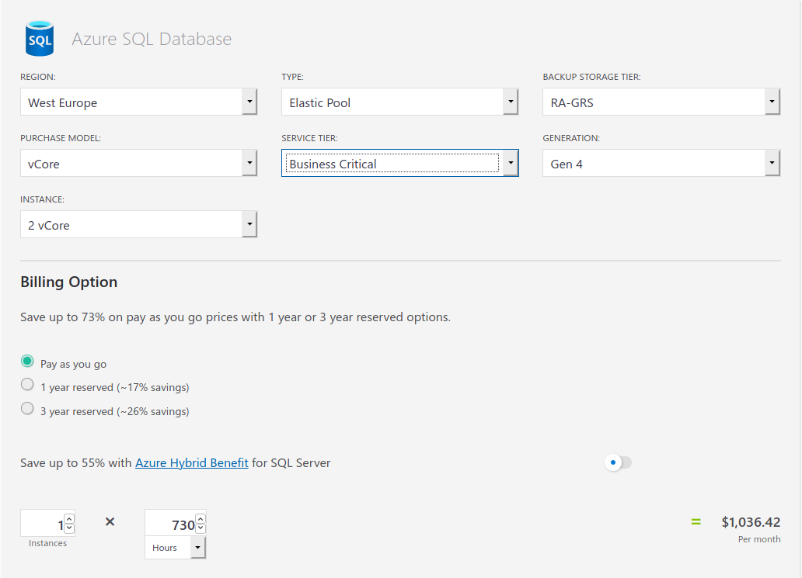

Ein sehr wichtiger Punkt unserer Anwendung ist die Erweiterbarkeit, wir müssen Szenarien wie hohe Zugriffszahlen und Last auf unserem System handhaben können. Da unsere Datenbanken und der Enterprise Service Bus bei Microsoft Azure gehostet werden, können wir diesen Punkt dank Infrastructure as a Service ausser Acht lassen. Ausfallsicherheit und automatische Ressourcenskalierung haben jedoch ihren Preis. Microsoft lässt sich sogenannte “Business Critical” Komponenten entsprechend honorieren.
Für eine Business Critical Datenbank bezahlt man je nach Konfiguration schnell ein Mehrfaches des normalen Preises.
Nebst der Ressourcen Skalierung und Ausfallsicherheit sind noch andere Punkte für uns wichtig. Hierzu gehört zum Beispiel, ein zuverlässiger Netzwerkprovider mit hoher Bandweite, dass die Daten schnell übertragen werden. Zusammengefasst nutzen wir die Cloud Technologie (IaaS), welche Ressourcen Skalierung und Ausfallproblematik übernimmt. Um die Kosten möglichst gering zu halten wählen wir bei der Konfiguration nur Komponenten aus, welche für uns Relevant sind.
Erweiterung der ProduktpaletteIm jetzigen Angebot beschränken wir uns auf Pullover mit einer beschränkten Auswahl an zur Verfügung gestellten Designs. Als Erweiterung sind zusätzliche Kleidungsstücke vorgesehen wie Kapuzenpullover, T-Shirt, Top, Kappe, Socken etc. Weitere Produkte wie Alltagsgegenstände oder Geschenkartikel sind ebenfalls möglich, diese setzen ein neues Feld an Partnern voraus.
Neue PartnerFür die Herstellung und den Druck neuer Produkte werden weitere Partnerunternehmen benötigt. Dabei sind schnelle Lieferzeiten, die Herstellung der Produkte auf hohem Niveau und die Preisgestaltung entscheidend.
Weitere ZahlungsmittelSobald neue Anbieter im Markt auftreten, sind wir bereit diese in unseren Zahlungsprozess zu integrieren. Ergänzend ist der Verkauf von Gutscheinen geplant.
MarketingUm die Daten der Kundschaft zu nutzen, arbeiten wir mit einer Agentur zusammen, welche unsere Kampagnen umsetzt. Diese beinhalten die Betreuung der Social Media Kanäle, Online Marketing oder die Erstellung der Newsletter. Dabei legen wir Wert auf die Gewinnung von Neukunden und Aftersales für bestehende Kunden. Denkbar ist auch ein Blog, welcher die Herstellungsschritte beleuchtet und aufzeigt oder kreative Inspiration für Designs liefert.
Eigenes DesignZum Start des Projekts werden bereits mehrere Designs angeboten. Geplant ist eine Schnittstelle, welche das Erstellen und Hochladen von eigenen Designs ermöglicht. In einem späteren Verlauf sind hier natürlich auch virale Marketingkampagnen wie Design Wettbewerbs möglich.
Produktion verfolgenDa wir stetig über den Status unserer Prozesskette Bescheid wissen, werden wir diese auch den Nutzenden unserer Webplattform als Tracking Informationen ihrer Bestellung zur Verfügung stellen.